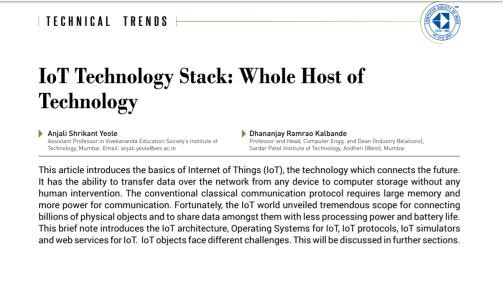

Education
Dr. Anjali Yeole has obtained her ph.D in technology from University of Mumbai, Mumbai in 2019.she has also done great work in the field of Internet Of Things (IOT), Cryptography, System security, Parallel computing, Distributed Computing, Virtualization and Cloud computing, Computer Network and Web technology.
Published Article on IOT

Books
Dr. Anjali Yeole has reviewed two books “Computer Organization and Architecture” and “Internet of Things" by Shriram K. Vasudevan, Abhishek S. Nagarajan, and R. M. D. Sundaram”. She authored two books “Information Management” and “Internet of Everything”.
Proceedings of the International Conference & Workshop on Emerging Trends in Technology
Vulnerability in web applications allows malicious users to obtain unrestricted access to private and confidential information. SQL Injection vulnerabilities are particularly relevant, as web services frequently access a relational database using SQL commands. SQL injection is ranked at the top in web application attack mechanisms used by hackers to steal data from organizations. Hackers' can take advantages due to flawed design, improper coding practices, improper validations of user input, configuration errors, or other weaknesses in the infrastructure. Reference has said that researchers have proposed different techniques to provide a solution for SQLIAs (SQL Injection Attacks), but many of these solutions have limitations that affect their effectiveness and practicability.
Proceedings of International Conference on Wireless Communication
Generally, 6LoWPAN network is used for communication in IoT. All the 6LOWPAN nodes in the radio range of 6LoWPAN boarder router will start sending or reading data. There is no authentication present; hacker can take advantage of this situation and can be able to place his own sensor in the network which will start generating some random data at high speed and of huge size. This will result in Distributed Denial of Service [IoT-DDOS]. To avoid this problem, group management protocol has been proposed in this paper, “MAC-based Group Management Protocol-IoT” [MAC GMP-IoT].
Asian Journal For Convergence In Technology (AJCT)
The financial market in itself is highly dynamic in nature and is affected by factors that are multifaceted. Human beings have the ability to monitor and assess several of these factors simultaneously. However, similar versatility is not easily achieved by software. Our aim is to create a analysis system that showcases some of this desired versatility, with the help of several algorithms and techniques, that will help capture more than one factors needed for efficient and thorough analysis of such a complex market. Moreover, the precision and robustness required to analyze the mammoth amount of financial data available is beyond human capacity. A combination of a holistic approach along with an added layer of efficiency will create a system capable of much more than mere analysis of the facts.
Achievements

Patent for Use of Internet of Things(IOT) in Healthcare.
In today's world of connectivity, with the advancement of Internet of Things (IoT) all entities are connected to each other by some communication means. The Internet of Things for the medical equipment will produce data that can go a long way in not only increasing equipment efficiency, but also patient health. The Internet of Things (IoT) is increasingly being recognized by industry and different services mainly in healthcare. This paper describes the various Internet of Things (IoT) enable devices and its practices in the area of healthcare for toddler, children, chronic care, monitoring of critical patients, operation theaters and medicine dispenser.This project is divided into 4 layers:Patients body network,Data Analytics layer,Private storage layer with block chaining and User Layer.